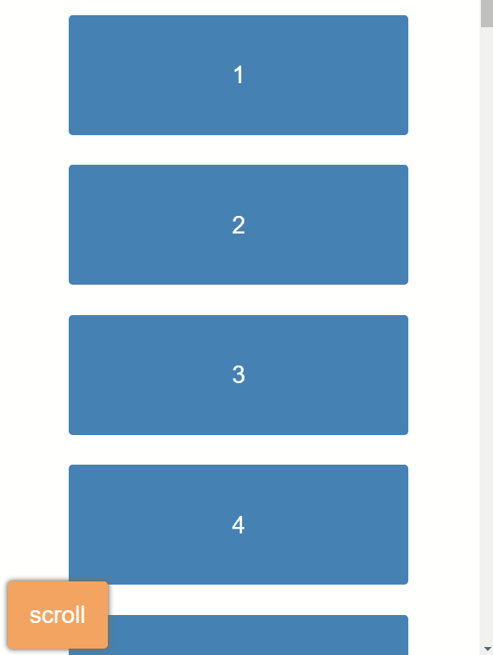
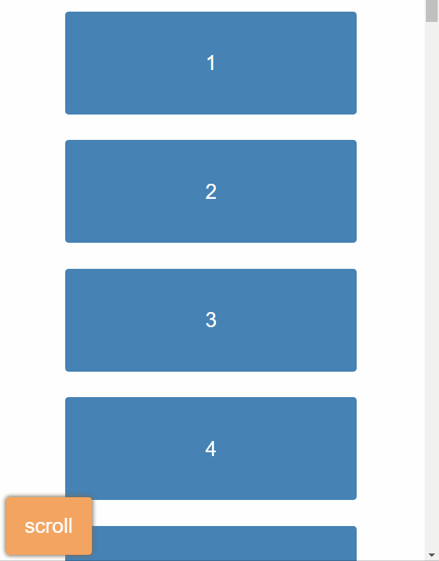
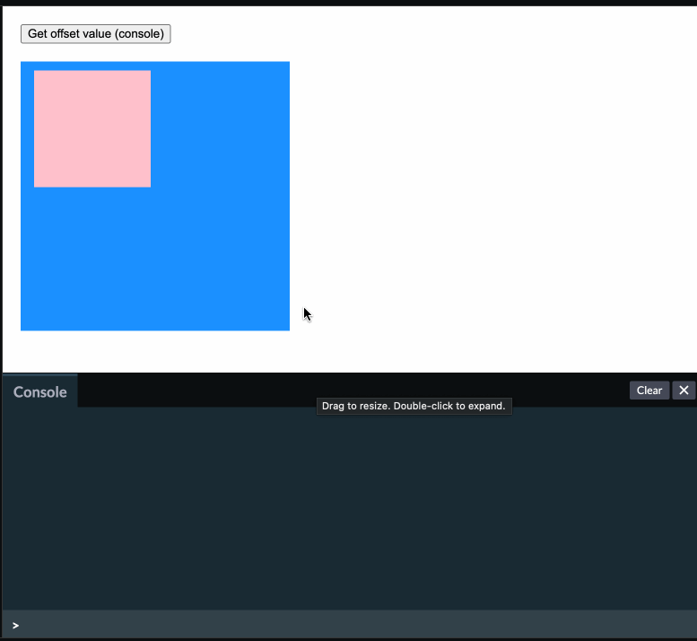
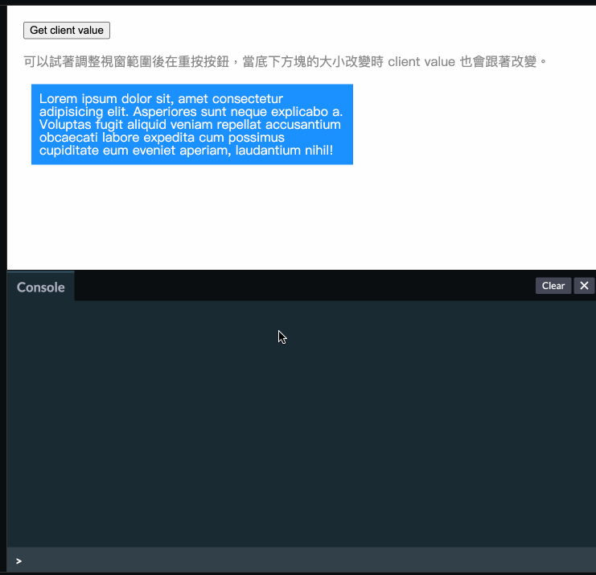

懶人包。
element.getBoundingClientRect()
取得元素的寬高與位置資訊
1 | <style> |
1 | console.log(document.querySelector('div').getBoundingClientRect()) |
Output：
1 | { |
此方法回傳的寬高是採用 border-box 的計算方式，意思就是算到 boder 為止。
而座標部分是相對於 viewport
x / left元素的左上角與 viewport 的水平距離y / top元素的左上角與 viewport 的垂直距離right / bottom元素的右下角距離 viewport 的水平垂直距離
window.scrollTo()
設定滾軸要滾到哪裡
1 | /* 閉包，把變數 index 藏起來 */ |

也可以設成這樣，就會有 smooth 的效果：
1 | function scrollDown() { |

offsetTop / offsetLeft
附註：如果不知道實際 parent 是誰？可以用 offsetParent 來查詢。
- 找到第一個 position 非 static 的 parent 並計算距離
- parent 的 padding 會計算進去

原始碼可以到 Codepen 上參考
clientWidth / clientHeight
根據該元素的實際大小來計算寬與高，會包含 padding，但不包含 border 和 scrollbar。

原始碼可以到 Codepen 上參考
網址相關
window.location.reload()重新整理目前的頁面window.location.assign(url)跳轉到新的頁面，會留下歷史紀錄（可以按上一頁）window.location.replace(url)更新目前的頁面，不會留下歷史紀錄（不能按上一頁）window.location.search查看網址的 query string